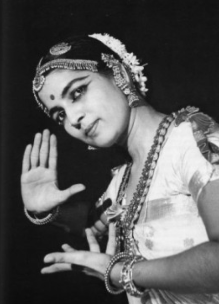
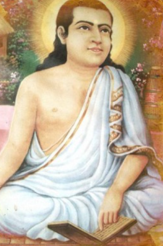
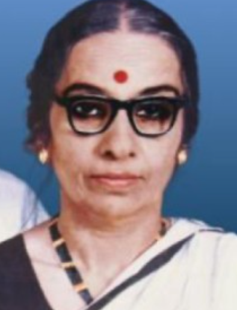
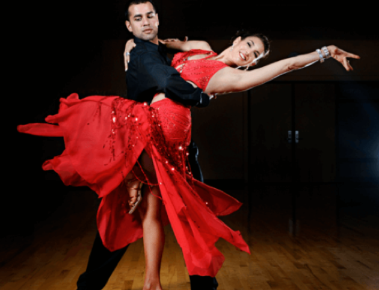

FAMOUS DANCERS AND THEIR INFORMATION
Indian Classical Dancers of all Time
1. Rukmini Devi Arundale – Bharatnatyam
Born on 29th February 1904, Rukmini Devi Arundale was a theosophist, dancer and choreographer of Bharatnatyam. She changed the face of Bharatnatyam by reviving it and bringing back its due recognition. Not only did she work on re-embellishment of Bharatanatyam but also worked on the re-embellishment of the traditional Indian arts and crafts.
She defended the art of Bharatnatyam which was called and considered as a ‘vulgar’ art. She removed the eroticism of Sadhir and made it prominent as an art form for Victoria British and Indian upper caste elites.
Rukmini Devi was featured in India Today’s list of ‘100 People Who Shaped India’. She was awarded with ‘Padma Bhushan’ in the year 1956 and the ‘Sangeet Natak Akademi Fellowship’ in 1967.

2. Pandit Birju Maharaj- Kathak
Brijmohan Mishra popularly known as ‘Pandit Birju Maharaj’ as was born on 4th February 1938 in the family of Kathak dancers which includes both his uncles ‘Shambhu Maharaj’ and ‘Lachhu Maharaj’, and his father and guru ‘Acchan Maharaj’. He brought a lot of fame to the classical dance form of Kathak not only nationally but even globally.
Maharaj started teaching the dance form at a young age of 13 at Sangeet Bharti in New Delhi. After teaching at the Bharatiya Kala Kendra and at the Kathak Kendra where he was the director, he opened his own dance school named ‘Kalashram’ in New Delhi as soon as he retired.
He even choreographed famous song ‘Kahe Chhed Mohe’ from the movie Devdas and ‘Mohe Rang Do Laal’ from Bajirao Mastani.
He was awarded with ‘Padma Bhushan’ in the year 1986.

3. Srimanta Sankardev – Sattriya
Srimanta Sankardev was an Assamese Polymath, saint-scholar, poet, playwright, social-religious reformer and an important figure in the cultural and religious aspect in the history of Assam in the 15-16 century.
He is widely credited for introducing new forms of music, theatrical performance, language and the ‘Sattriya’ Dance.
Sattriya comes under the Classical Dance Forms of India, conceived and developed by Sankardev and preserved by ‘Sattras’ for all these decades.
In the recent times, Sattriya has seen major developments in terms of choreography, costumes and stage presentation but the roots remain authentic and the concept too.

4. Kalamandalam Kalyanikutty Amma – Mohiniyattam
Kalamandalam Kalyanikutty Amma (1915-1999) was an Indian Classical Dancer and is the reason making Mohiniyattam dance form – a mainstream Indian Classical dance from when the dance form was on the verge of near-extinct.
She is known to create the formal structure and ornamentation of the Mohiniyattam dance form and has also presented two books of which she authored – “Mohiniyattam – History and Dance Structure” which was an elaboration and authentic documentation of Mohiniyattam.
She has won both Kerala Sangeetha Nataka Academy and Kendra Sangeet Natak Akademi awards and has also been honoured with Kalidasa Samman in 1997-1998.

This was all about famous Indian Classiscal Dancers and now we will look into some famous dances around the world..
5. Bollywood Dance, India -
Bollywood dance is a dance form that is heavily used in Indian Bollywood films. Numerous styles are used in executing this dance form. Indian classical dance styles like kathak, Indian folk, belly-dancing, jazz, Western popular, and more. Due to its wide range of styles and ease of dancing, Bollywood music has gained wide acceptability in many other parts of the world.

6.Ballet, Russia -
No dance form can approach gracefulness as closely as the Russian ballet. It is an artistic dance form that is performed to music. The steps of Russian ballet demand high levels of precision and formality. The classical ballet dance form which originated in Renaissance Italy was introduced to Russia during the rule of Peter the Great and since then became an integral part of Russian society.

7. Break Dance, United States -
Break dancing, also known as B-boying or breaking, is a street dance style that is highly popular among the youth in the United States and many other parts of the world. The dance form primarily originated among the African American and Puerto Rican youth. The dance form became viral due to media interest in it and soon spread to other parts of the Americas and Europe. Four kinds of movement involved in break dancing are freezes, toprock, power moves, and downrock.

8. Bhangra, India -
The bhangra is a dance form that originated in the Punjab region of India and is associated with fun and flamboyance. Bhangra is performed across India on many social occasions like marriage ceremonies, cultural programs, etc. It is also used in Bollywood films produced in the country. The easy and jovial style of the dance form has earned it many followers in other parts of the world where it has been introduced by the Punjabi diaspora.

9. Salsa, Cuba -
Strongly influenced by Latin American culture (particularly Cuba and Puerto Rico), salsa originated in New York City as a social dance form. The movements of salsa can trace their origins to Cha-cha-cha, Mambo, and Cuban Son as well as other dance forms.
